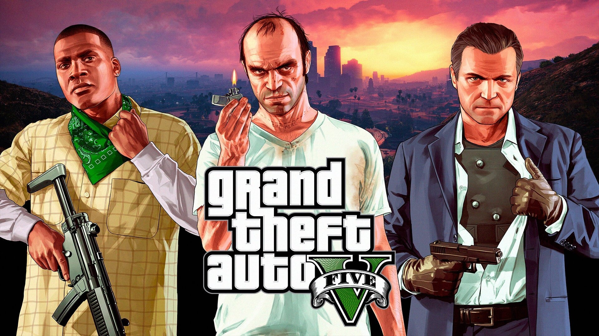
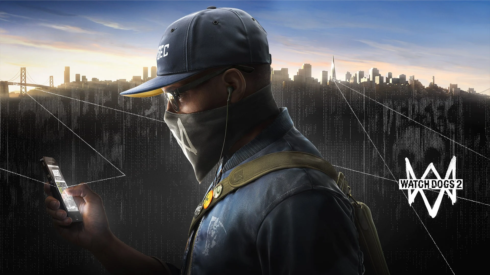
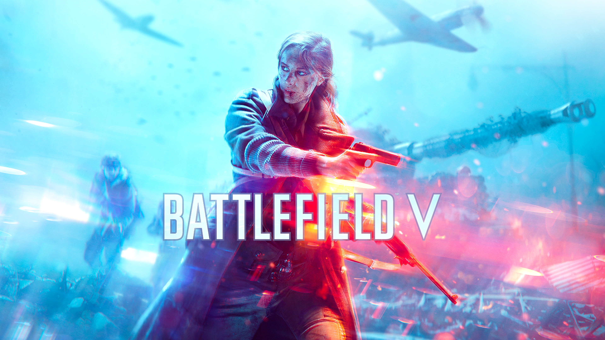
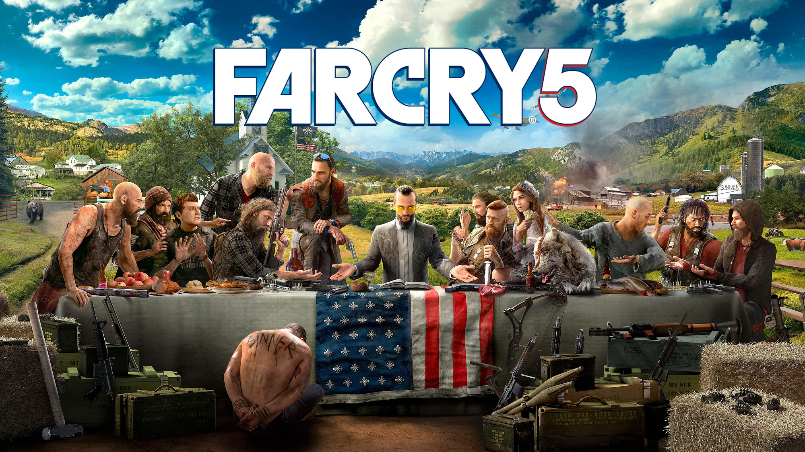
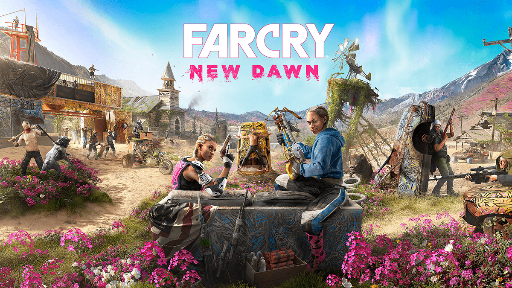
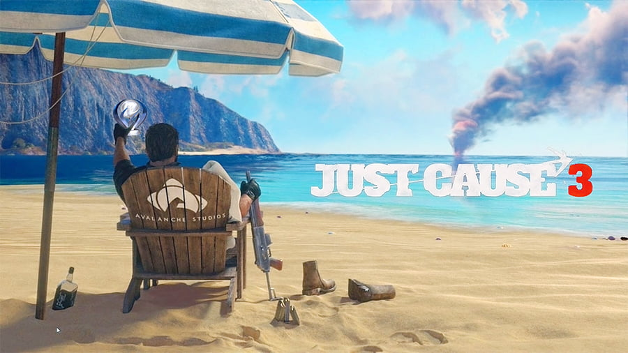
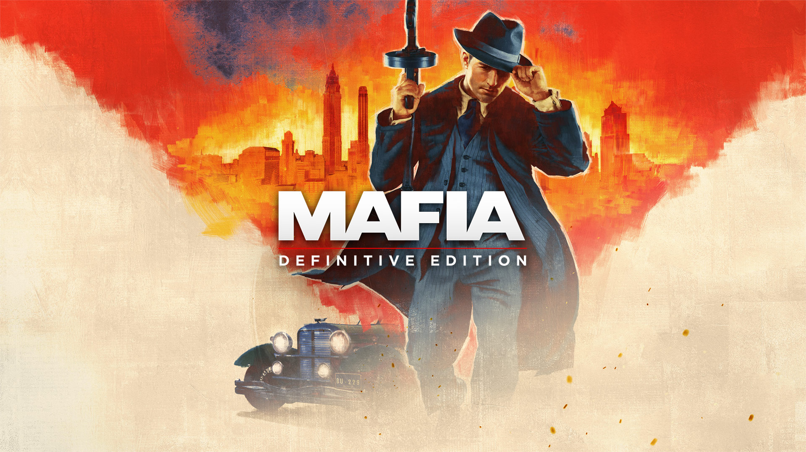
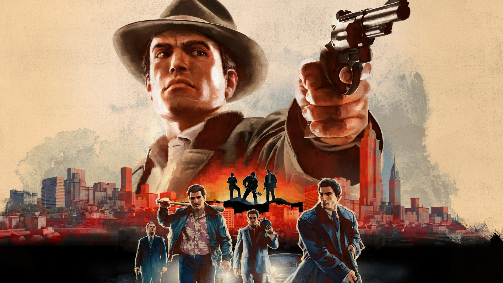
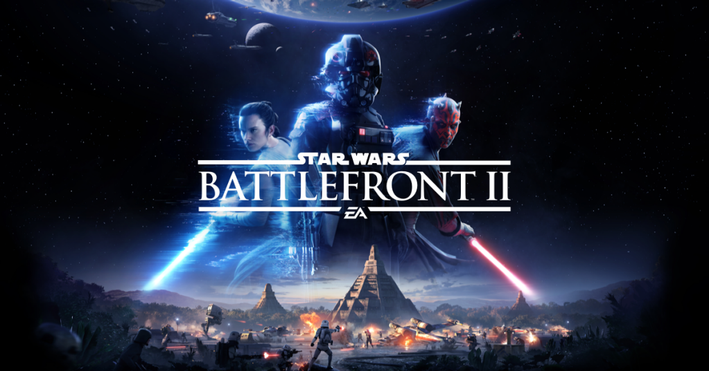

Red Dead Redemption 2 | 10/10
This game provided me with a lot of joy and learning, going through Arthur Morgan's final days in the ending of wild west outlaws. The game shows the feeling of redemption like no other one did.
This game provided me with a lot of joy and learning, going through Arthur Morgan's final days in the ending of wild west outlaws. The game shows the feeling of redemption like no other one did.
Even though I haven't finished the game yet, I've already put it in my top games of all time. The environment of the game is awsome, it's in a cyberpunk world, where technology rules.

I'm not a big fan of the story mode of the game, but i love the online mode, playing with friends and doing heists. Most of it is just fun and joy, a have about 6.000 hours og GTAV in my Playstation 4
Detroit Become Human was the first game that has just story that I played. The story of this game is just amazing, and all the possible endings makes you want to play more, even after you've already finished the game.

This game was the first tech game I've played, and i loved it, it was awsome and interesting. I first finished it in my Playstation 4 and some time ago i bought and played the game again on PC.
This game provided me with a lot of joy and learning, going through Arthur Morgan's final days in the ending of wild west outlaws. The game shows the feeling of redemption like no other one did.
Detroit Become Human was the first game that has just story that I played. The story of this game is just amazing, and all the possible endings makes you want to play more, even after you've already finished the game.
This game was the first tech game I've played, and i loved it, it was awsome and interesting. I first finished it in my Playstation 4 and some time ago i bought and played the game again on PC.

Battlefield 5 is a WW2 game, and me personaly really like WW2 games. The bad part about the game is the overall game time, that its too short, but, to compensate that, they made the online combats, and its amazing.

It's an amazing game when played with friends. Doing the objectives and playing around in the game with a friend is very fun.

It could easily be a Farcry 5 DLC, just like the other ones. Besides that, the RPG aspect of the game is amazing, with a good RPG Aspect.

This game is amazing to explode and destroy things, there's a lot of perks you can use to do a lot of fun things, vehicles, guns, armors, planes, helicopters and much more!

The story is amazing and i love the ambient of the game, the cars, guns, etc. But one thing I really don't like about this game is the gameplay, especially the driving.

The story is incredible, and I love the game's atmosphere—the cars, guns, and everything else. However, the gameplay really falls short for me, especially the driving mechanics.

I really love the whole Star Wars Saga, so i find this game realy incrideble, the only down side, is that the game is too short. The online is just amazing, all the game modes, all the guns, characters, missions, etc. It's really fun to play when you are a Star Wars fan.